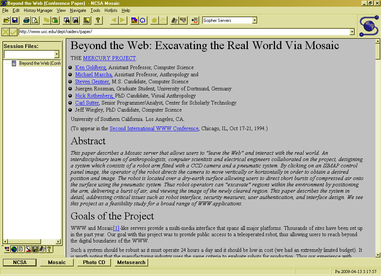
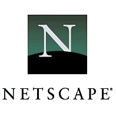
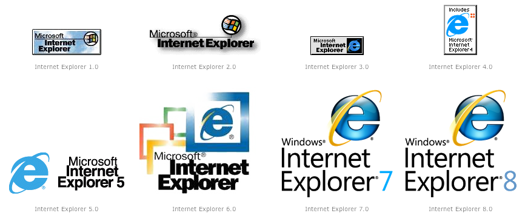
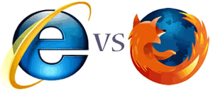
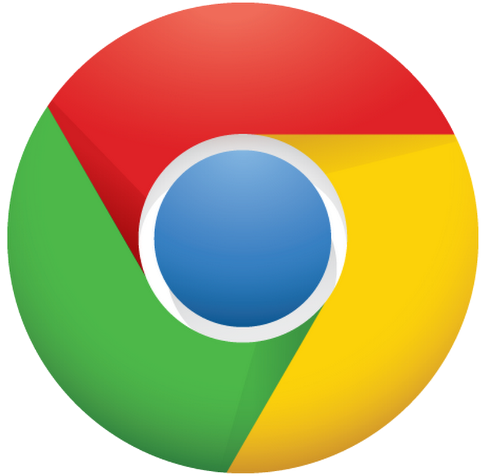

Web Browsers
The first graphical web server was created by Berners-Lee in 1991. To avoid confusion with www it was renamed from the original name WorldWideWeb to Nexus. Nexus was used mainly for web browsing but could also help create web pages.
Check out the Nexus Browser in action in this video
By 1993 Mosaic was released. This was the first web browser to be accessed by the public and is well known to have made the internet more popular to the everyday person. Mosaic still sets the building blocks for today's web browsers, Internet Explorer, Firefox etc. that continue to use a similar GUI.
In 1994 Netscape was created by Marc Andreessen. Marc Andreessen, helped create Mosaic, went solo and crated Netscape. Netscape Navigator was the first commercial web browser available worldwide.

By 1995 Microsoft had released their own web browser, Internet Explorer (IE). By the following year Internet Explorer had only a 10% market share, whilst Netscape had the other 90%. In 1996 Opera was created by a Norwegian telecommunications company and was released to the public.
1998 saw the creation of Mozilla Firefox. Firefox was an open source project created by Netscape and was used to develop the future of web browsers. Whilst it wasn't released until 2004 Netscape Navigator was made open source because Internet Explorer had such a great market share.

By 2002 Internet Explorer held 95% of the market share. This was helped by being bundled with the Windows operating system.
In 2003 apple releases Safari web browser. The basis of Safari has been used by Google and Nokia for their mobile devices.
1998 saw the creation of Mozilla Firefox. Firefox was an open source project created by Netscape and was used to develop the future of web browsers. Whilst it wasn't released until 2004 Netscape Navigator was made open source because Internet Explorer had such a great market share.
2008 sees Google release its own web browser, Google Chrome. Chrome was made to be lightweight, fast and clean. Chrome was a strong competitor against IE because of its lightweight look and its speed improvement on IE.
 Just recently in March 2015 Microsoft announced that it would be shutting down Internet Explorer as it was not as popular. Microsoft has learned that bringing out new versions of Internet Explorer does not excite an audience. By removing Internet Explorer Microsoft is making way for their new Windows 10 web browser that goes by the name of the Spartan Project.
Learn more about the Spartan Project